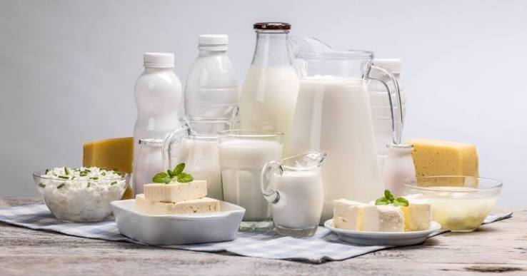

นม
นม หรือ น้ำนม หมายถึงของเหลวสีขาวที่ประกอบด้วยสารอาหารที่ออกมาจากเต้านมของสัตว์เลี้ยงลูกด้วยนม นมจะประกอบไปด้วยสารอาหารหลักที่จำเป็นสำหรับเด็กหรือสัตว์เกิดใหม่ ซึ่งนมสามารถนำไปสร้างผลิตภัณฑ์อื่น ได้แก่ ครีม เนย โยเกิร์ต ไอศกรีม ชีส นอกจากนี้นมยังสามารถหมายถึงเครื่องดื่มอื่นที่นำมาใช้ทดแทนนม เช่น นมถั่วเหลือง นมข้าว นมข้าวโพด นมแอลมอนด์